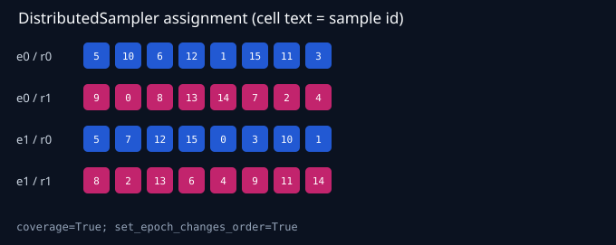

CPU DDP Correctness & Exact-Resume Lab
Actual 2-process CPU/Gloo execution · status completed · claim level controlled_correctness
Gradient max abs
1.11e-16
Final-weight max abs
2.78e-17
Resume max abs
0
Effective global batch
8
Coverage
true
Corrupt rejected
true
Deterministic sharding

Resume equivalence

Measured and estimated metrics
| parity.gradient_abs | 1.11022e-16 |
| parity.gradient_rel | 1.37958e-15 |
| parity.first_update_abs | 2.77556e-17 |
| parity.final_weight_abs | 2.77556e-17 |
| resume.state_abs | 0 |
| resume.state_rel | 0 |
| resume.loss_abs | 0 |
| training.effective_global_batch | 8 |
| training.local_batch_size | 2 |
| training.gradient_accumulation_steps | 2 |
| training.optimizer_steps | 2 |
| training.no_sync_microbatches_per_rank.0 | 2 |
| training.no_sync_microbatches_per_rank.1 | 2 |
| training.straggler.injected | true |
| training.straggler.rank | 1 |
| training.straggler.optimizer_step | 0 |
| training.straggler.delay_ms | 20 |
| training.max_rank_step_skew_seconds | 0.000115393 |
| training.mean_rank_step_skew_seconds | 0.000106731 |
| training.estimated_communication.model_gradient_bytes | 464 |
| training.estimated_communication.assumption | ring_all_reduce_2*(world_size-1)/world_size*gradient_bytes |
| training.estimated_communication.per_rank_per_sync_estimated_bytes | 464 |
| training.estimated_communication.sync_count | 2 |
| training.estimated_communication.per_rank_total_estimated_bytes | 928 |
| training.estimated_communication.cluster_total_estimated_bytes | 1856 |
| training.estimated_communication.measured_network_bytes | false |
| checkpoint.bytes | 22725 |
| checkpoint.save_seconds | 0.0358392 |
| checkpoint.load_seconds | 0.000967882 |
Claim boundary
Actual two-process CPU/Gloo DDP correctness on one deterministic tiny model and dataset, including averaged-gradient parity, no_sync accumulation, exact-resume auditing, and fail-closed checkpoint validation.
This run does not evidence:
- NCCL or GPU collective correctness/performance
- multi-node networking or elastic rank-failure recovery
- FSDP, ZeRO, tensor parallelism, or pipeline parallelism
- large-model convergence or production throughput scaling
- measured network communication bytes (reported bytes are a ring estimate)
Reproduction
python scripts/run_ddp_correctness.py --config configs/distributed/ddp_cpu.yamlMachine-readable contract
{
"schema_version": "1.0",
"config_contract_hash": "7547a5dcf01f2601db30a957e394582effb8550292e88a9c8e706c4b04a0a9fd",
"dataset_contract_hash": "89a48e66f33d53751010e58b3285862a4d26a8a5195535b75ff847a6b770f786",
"combined_contract_hash": "b95b83e10f2f7265afb6394c6d1e18814529944535f2312ee73fdb53fb5dc3ac"
}